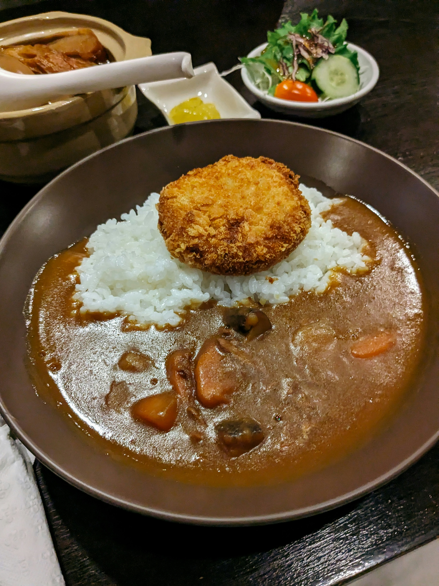

Home
Japanese Beef Curry

Warm hearty beef curry with a side of white rice
This recipe will show you how to make a delicious bowl of japanese style beef curry which I like to pair with a side of jasmin rice but you can use whatever rice you like. The recipe will take anywhere from 1 and a half to 2 and a half hours to cook depending on the cut of beef you choose to use.
Using any cut of beef will work as long as its a thicker style but I prefer to use a good chuck cut style of beef. There are also various types of curry packages to use but my favorite is the S&B® Golden Curry® package. As far as the rice selection I have found Jasmine to be my favorite pairing with this style of beef curry however I will not be showing you how to cook it in this recipe.
Ingredients
- 1 tablespoon olive oil
- 1 pound beef stew meat, cut into 1/2 inch cubes
- 4 garlic cloves, peeled and diced
- 2 medium onions, diced
- 5 medium carrots, cut into 1/4-inch rounds
- 6 cups of warm water, or more as needed
- 3 large potatoes, peeled and cut into 1/4-inch cubes
- 2(3.5 ounce) containers of curry sauce (S&B® Golden Curry®)
Steps
- Heat olive oil in large saute pan over medium-high heat.
- Add in beef and cook until outside is browned while stirring every few minutes for even browning. This should take about 5 to 7 minutes.
- Add in onions and cook until golden in color, around 7 minutes.
- Add in garlic and cook until fragrant, 1-2 minutes.
- Add in water and heat until boiling. You may need to add more water but just add enough that all the beef is fully submerged. Once boiling reduce heat and cover and let simmer for 2 hours. Make sure to set a timer as this is important for the next few steps.
- When there is an hour left on the timer add in the carrots and stir. Replace the lid and continue to let simmer.
- When there is 30 minutes left on the timer add in the peeled and diced potatoes and stir. Replace lid and continue to let simmer.
- When the timer is done add in contents of the curry package, fully incorperate and remove from heat once fully mixed and thickened. If you chose the package I have listed in the ingredients list then these instructions will work fully. If you have chosen a different curry package make sure to follow thier directions for adding in your sauce.
- Serve in a bowl with you prefered rice and enjoy!